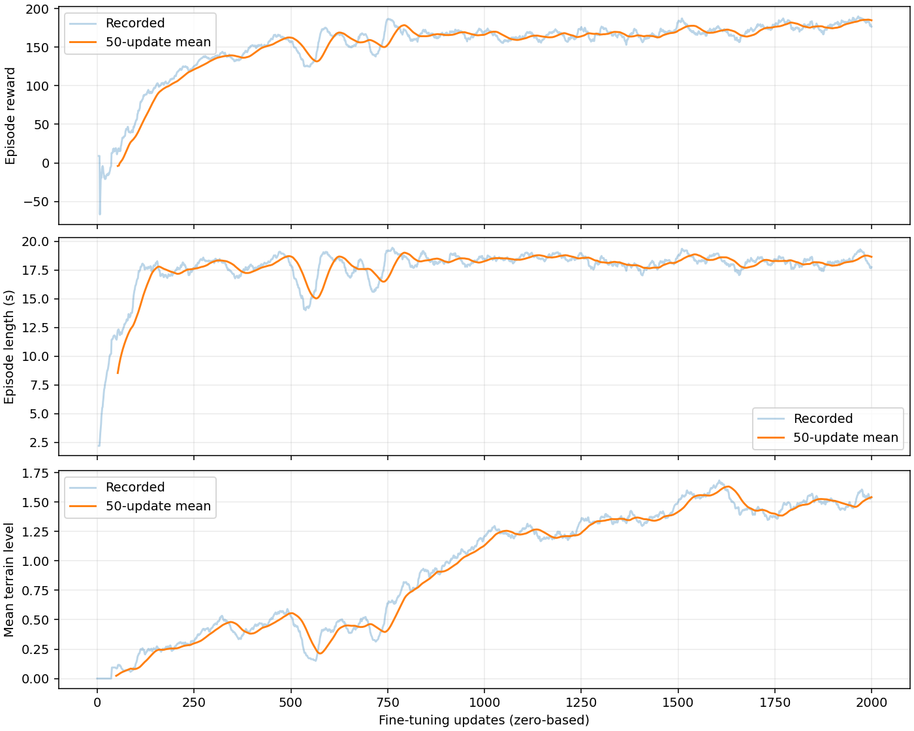

기존 2/15 → 1차 7/15 → 2차 12/15. 총 실제 PPO 업데이트 3,000회. 원본 actor와 CAD는 보존했다.
1차는 2,000회 CAD 적응 학습, 2차는 1,000회 명령 유지·방향 진행·요철 보완 학습이다. 두 후보를 같은 외부 ROS2/Isaac Sim 시험으로 비교했다. 학습 보상과 시험 통과 기준은 별개다.
자가 접촉은 원본 인접 관절 필터를 유지한 66개 비인접 강체 쌍의 접촉 반력이다. 상전류는 토크 상수 1.23/1.44 Nm/A와 효율1을 사용한 추정이다. 배터리 전류와 실측 전류가 아니다. 정격 RMS 초과 관절 수도 동작 성공과 별도로 표시했다. 실패한 동작의 낮은 전류는 최적화 성공으로 판단하지 않는다.
각 RMS는 실제 기록구간 전체의 통계다. 조기 실패한 시험은 기록 시간이 짧으며 동일한 시간창 비교가 아니다. 표와 CSV의 기록 시간(s)을 함께 확인해야 한다.
1차 상세·영상·모터별 CSV · 2차 상세·영상·모터별 CSV · 3단계 비교 CSV · 전체 요약 JSON
| 시험 | 기존 | 1차 | 2차 | 2차 미통과 사유 | ||||||||||||
|---|---|---|---|---|---|---|---|---|---|---|---|---|---|---|---|---|
| 판정 | 기록 s | 관절 RMS A 범위 | 정격 RMS 초과 수 | 자가 접촉 N | 판정 | 기록 s | 관절 RMS A 범위 | 정격 RMS 초과 수 | 자가 접촉 N | 판정 | 기록 s | 관절 RMS A 범위 | 정격 RMS 초과 수 | 자가 접촉 N | ||
| 평지 전진 | 미통과 | 14.000 | 3.34–8.09 | 2 | 0.0 | 통과 | 14.000 | 2.41–7.36 | 0 | 0.0 | 통과 | 14.000 | 3.22–10.26 | 0 | 0.0 | |
| 정지·재출발 | 미통과 | 24.000 | 4.64–11.79 | 1 | 0.0 | 통과 | 24.000 | 3.03–8.83 | 0 | 0.0 | 통과 | 24.000 | 3.43–10.92 | 0 | 0.0 | |
| 후진 | 미통과 | 14.000 | 5.33–14.91 | 6 | 0.0 | 미통과 | 14.000 | 2.13–12.05 | 0 | 0.0 | 통과 | 14.000 | 4.01–13.33 | 1 | 0.0 | |
| 측면 이동 | 미통과 | 14.000 | 4.80–13.20 | 3 | 0.0 | 미통과 | 14.000 | 0.76–9.63 | 0 | 0.0 | 통과 | 14.000 | 2.74–11.23 | 0 | 0.0 | |
| 제자리 회전 | 미통과 | 14.000 | 4.42–12.67 | 3 | 0.0 | 미통과 | 14.000 | 0.86–11.45 | 0 | 0.0 | 미통과 | 14.000 | 2.65–8.34 | 1 | 0.0 | yaw_tracking_error |
| 5 cm 계단 상승 | 미통과 | 24.000 | 7.08–13.20 | 5 | 0.0 | 통과 | 24.000 | 3.98–9.33 | 0 | 0.0 | 통과 | 24.000 | 3.52–10.71 | 0 | 0.0 | |
| 5 cm 계단 하강 | 미통과 | 24.000 | 4.55–12.73 | 2 | 0.0 | 미통과 | 24.000 | 3.01–7.52 | 0 | 0.0 | 통과 | 24.000 | 3.45–10.09 | 0 | 0.0 | |
| 10 cm 계단 상승 | 미통과 | 24.000 | 5.35–10.70 | 2 | 435.6 | 미통과 | 24.000 | 3.30–17.91 | 3 | 0.0 | 통과 | 24.000 | 4.33–11.37 | 0 | 0.0 | |
| 10 cm 계단 하강 | 미통과 | 24.000 | 4.77–12.72 | 2 | 992.1 | 통과 | 24.000 | 3.74–7.87 | 0 | 0.0 | 통과 | 24.000 | 3.69–10.03 | 0 | 0.0 | |
| 15.7 cm 계단 상승 | 미통과 | 24.000 | 6.25–10.90 | 3 | 1032.7 | 미통과 | 8.235 | 5.97–12.96 | 1 | 1345.3 | 미통과 | 22.920 | 8.64–18.64 | 10 | 0.0 | incomplete_recording; did_not_survive; excessive_tilt; outside_corridor; insufficient_stair_traversal; RuntimeError('Trunk tilt exceeded 60 degrees') |
| 15.7 cm 계단 하강 | 미통과 | 10.950 | 4.21–10.42 | 1 | 0.0 | 미통과 | 24.000 | 2.25–22.53 | 3 | 0.0 | 미통과 | 6.725 | 3.96–10.80 | 1 | 0.0 | incomplete_recording; did_not_survive; excessive_tilt; insufficient_stair_traversal; wrong_ground_change; RuntimeError('Trunk tilt exceeded 60 degrees') |
| 1–3.5 cm 요철 | 통과 | 24.000 | 3.45–8.43 | 1 | 0.0 | 미통과 | 24.000 | 2.06–18.78 | 3 | 0.0 | 통과 | 24.000 | 3.18–9.75 | 0 | 0.0 | |
| 기립 유지 | 통과 | 12.000 | 0.17–6.74 | 0 | 0.0 | 통과 | 12.000 | 0.16–6.85 | 0 | 0.0 | 통과 | 12.000 | 0.16–6.85 | 0 | 0.0 | |
| 10 cm 낮추기·기립·보행·정지 | 미통과 | 18.960 | 3.70–7.62 | 0 | 654.1 | 통과 | 30.000 | 1.62–7.86 | 0 | 0.0 | 통과 | 30.000 | 2.01–8.74 | 0 | 0.0 | |
| 18 cm 낮추기·기립·보행·정지 | 미통과 | 18.440 | 3.53–7.42 | 0 | 0.0 | 통과 | 30.000 | 1.74–8.28 | 0 | 0.0 | 통과 | 30.000 | 1.97–9.12 | 0 | 0.0 | |
1차

2차

단일 seed42 검증이다. 미통과 항목을 유지했으며 실기체 준비 완료 판정이나 자동 채택은 하지 않았다.